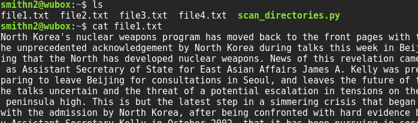
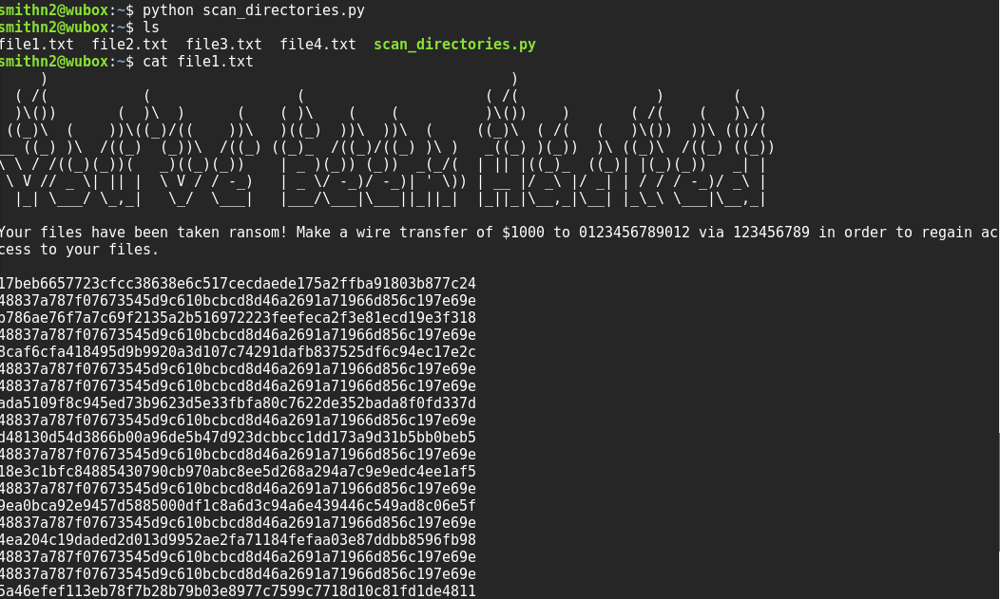

- Ransomware Lab -
Lab Goals
- Understand the detrimental effects of ransomware.
- Reverse engineer simple ransomware software.
Quick introduction to Ransomware
Ransomware is malicious software that blocks access to a computer or information until a specific amount of money has been paid. It belongs to the general category of malware, i.e., malicious, intrusive software.
Prerequisites
- You will need basic command line knowledge to complete this lab. Codecademy has a great tutorial on this topic.
- Basic cryptography: Khan academy has a great class on cryptography and these ciphers that can be found here.
- Hashing: Here is an interesting video from khan academy on hash functions.
Part 1: Setting up the topology
- Reserve a single Xen VM with default settings
- Log onto the node and download the provided text files and python script scan_directories.py (Right click and save link as scan_directories.py)
Part 2: The Mission
- Log onto the machine assigned by your instructor.
- Find all the files by using the proper directory listing commands and view those files.

- Run the file scan_directories.py to scan your machine for viruses by using the following command:
python scan_directories.py
- Open the text files again, after the scan_directories.py has been executed.

- What do you think happened? Can you convert the files back to their original form?
- Open the file scan_directories.py with your favorite text editor. What do you think this code is doing?
- Should you run a file that someone sent you on an email, even if this looks like a file sent by your manager/instructor/ someone you know? Why?